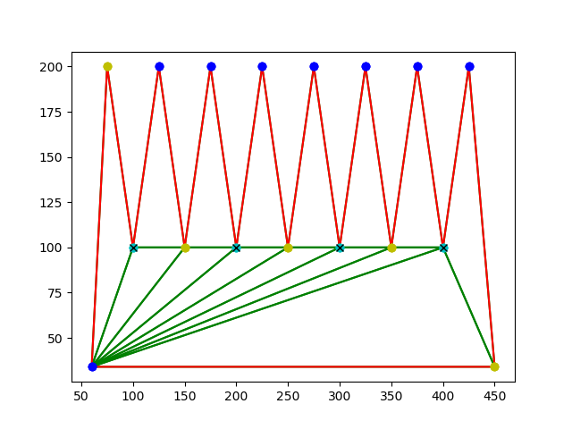

Computational Geometry (CSCI 716) Project: The Art Gallery Problem
Project Title:
The Art Gallery Problem
Team Members:
Akshay Sharma (acs1246)
Darshan Kavathe (dck1135)
Motivation:
The art gallery problem is a well known one which has applications in wide and interesting areas. Although it is framed as a security problem where guards vigilantly protect an art gallery, it can also be framed as an illumination problem. This transforms it into providing optimal illumination within a closed building while minimizing the number of lights being used. This issue of visibility can be used within games for level design as well - just imagine a group of non-player characters patrolling an area while the player himself has to stealthily move around or even attack them. Interestingly enough, the art gallery problem is almost directly applicable to tower defence style games where the player needs to place objects like turrets at various positions within a structure to secure it against adversaries that gradually increase in strength and speed.
Along with the above use cases, the art gallery problem also seems applicable to areas such as the design of buildings and vehicles, route planning and even circuit design. For these reasons, and because it presents such an interesting setting along with many intriguing variations, we have decided to look at this problem and hope to gain some insight into how computer scientists over the ages have chosen to tackle it, and perhaps contribute something as well.
Description:
The art gallery problem is also popularly called the museum problem. In computational geometry literature, it is also referred to as the Vertex-Pi Floodlights problem. The problem is named after the real-world problem of guarding an art gallery or a museum with as few guards as possible in such a way that the guards are collectively able to keep all parts of the museum in sight at all times. In computational geometry, the gallery is typically represented using a 'simple polygon' (a flat shape created by straight, non-intersecting sides that form a closed path in a pair-wise fashion). A set of points is said to 'guard' a portion of the polygon if, for each point 'a' inside the polygon, another point 'b' exists such that the line joining 'a' and 'b' does not have any portion outside the polygon.
As part of our project, we plan to survey the body of work surrounding this well-studied problem, arrive at the best methods available, try out our own methods of solving the problem and also look at known variations of the problem involving moving guards and polygons of varying shapes.
Ideally, we would also like to have a few implementations of the problem that can be used to run simulations of it along with showcasing possible solutions in a web application.
Timeline:
09/29 - 10/04 : Go through papers and other available materials related to the problem and its variations. Try to highlight approaches that may be of particular use.
10/05 - 10/31 : Try our own approaches to the problem and catalogue possible shortcomings with each approach. Start with implementing small versions of the problem and dive deeper into the methods used.
11/01 - 11/19 : Create the actual applications along with visualizations.
11/20 - 11/31 : Work on the final report and presentation.
Division of roles:
Akshay: Investigate triangulation and graph colouring as possible solutions. Try Threejs for visualizing the problems. Look at concave variations.
Darshan: Investigate convex partitioning and linear programming as possible solutions. Look at the mobile guards and exterior viewing scenario.
Program to determine vertex guard positions using triangulation and 3-colouring of the given polygon
As part of a more naive approach to solve the problem for regular polygons, we implemented a program to perform triangulation and 3-colouring of a given polygon
and then display the output with vertex with diagonals drawn, colouring of the vertices and the positions of the vertex guards.
Some screen shots of the outputs generated by the program are displayed below:
Few things to point out:
- The polygons are shown in red.
- Diagonals caused by triangulations are shown in green.
- The vertices are shown in 3 different colours - yellow, dark blue and cyan.
- The vertex guard positions are superimposed as Xs on the minimum vertex colour.
1) This is an orthogonal polygon with axis parallel edges. More complicated orthogonal figures might require quadrilateralization instead of triangulation, but here it seems to do the job.
Number of vertex guards found: 2.

2) This is a more complicated orthogonal polygon with axis parallel edges. It is clear from looking at it that the triagulations produced are becoming more complicated now.
Number of vertex guards found: 12.

3) This is a polygon with a mixture of orthogonal and normal edges.
Number of vertex guards found: 4.

4) This is a more complicated polygon with no orthogonal edges.
Number of vertex guards found: 5.

5) This is a regular pentagon.
Number of vertex guards found: 1.

6) This is a septagon.
Number of vertex guards found: 2.
As can be clearly seen, 1 guard should have sufficed here. An art gallery shaped in this manner, would not required 2 guards.
This example shows that 3-colouring on its own can never sufficiently guarantee a good solution to the problem. Additional visibility checks are required.

7) This is a popular example to test Art Gallery Solutions on.
Number of vertex guards found: 4.
